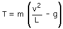
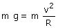

d) Los problemas pueden aparecer en la parte superior de la trayectoria donde la tensión vale:  Salta a la vista que hay valores de v que hacen la tensión negativa. Una tensión negativa indica una situación que no puede darse: con esa velocidad la piedra no podrá recorrer una circunferencia de radio L El menor valor posible para la tensión es 0 que corresponde al caso en que la piedra recorre la curva sometida solo a la acción del peso. La velocidad correspondiente a esta situación se denomina 'velocidad crítica' (vc).
Si la velocidad de la piedra fuera menor que la crítica
¿Qué pasaría?  La piedra describirá una curva de radio R (R < L) pero no caerá verticalmente. Resumen
|